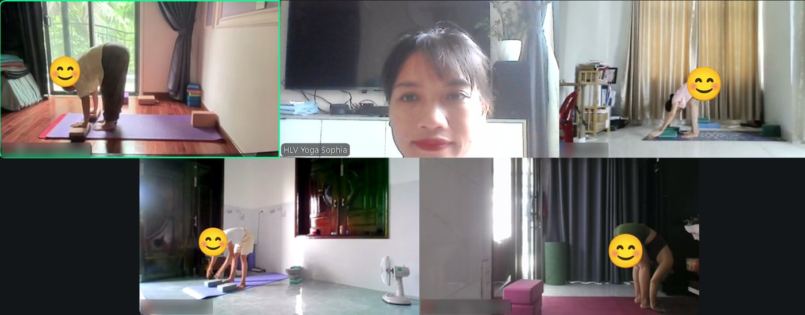
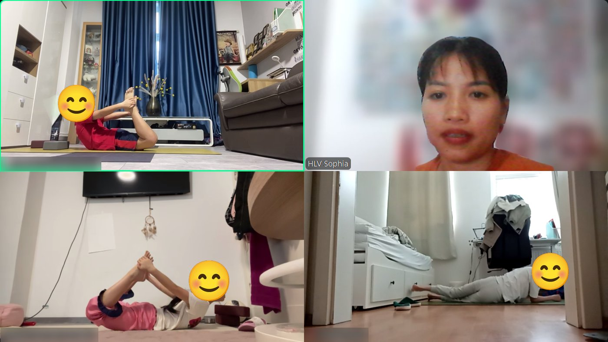

Yoga người lớn · Nỗi lo thời hiện đại
Ứng dụng yoga cân bằng phục hồi cho người ăn uống theo cảm xúc: khi mình ăn vội, ăn vì buồn, ăn vì mệt
Bữa trưa ăn trước màn hình máy tính, xong lúc nào không biết. Tối về mệt, mở tủ lạnh dù không đói. Ăn xong lại thấy nặng bụng, và nặng cả lòng.
Ở một lớp Zoom, cô hỏi cả lớp: “Hôm nay bữa trưa mọi người ăn món gì?”
Có mấy giây im lặng. Rồi một bạn cười: “Em phải nghĩ một lúc mới nhớ ra cô ạ.”
Không ai trong lớp ăn ít. Nhưng hầu như không ai thật sự có mặt trong bữa ăn của mình. Người ăn trong lúc họp. Người ăn trên xe. Người ăn cho xong để còn đón con.
Cô cũng từng như vậy.
Thời bây giờ, chuyện ăn uống không còn chỉ là chuyện no đói. Mình ăn vì căng thẳng, vì buồn, vì chán, vì thưởng cho mình sau một ngày dài, vì ai cũng đang ăn. Đồ ăn nhanh và đồ ngọt lúc nào cũng ở trong tầm tay, chỉ một cú chạm trên điện thoại là có người mang đến tận cửa.
Bài này không đưa ra thực đơn giảm cân. Sophia muốn cùng nhìn lại cách mình ăn, không chỉ ăn gì: hơi thở trước bữa ăn, nhận ra đói thật và đói cảm xúc, ăn chậm lại, dinh dưỡng giản dị, giấc ngủ, giới luật yoga, và một chuỗi tư thế nhẹ cho vùng bụng.

- Vì sao mình ăn khi không đói
- Thang đói no
- Đói thật hay đói lòng
- Ăn chậm 20 phút
- Năm thể
- Dinh dưỡng giản dị
- Chuỗi tư thế
- Khi nào nên đi khám
Vì sao mình ăn khi không đói
Ăn khi buồn không phải là yếu đuối. Đồ ăn, nhất là đồ ngọt và đồ béo, làm mình dễ chịu thật, dù chỉ một lúc. Não nhớ cảm giác đó. Lần sau buồn, tay tự tìm đến.
Căng thẳng. Một nghiên cứu ở Đại học Yale cho thấy những phụ nữ tiết nhiều cortisol khi gặp căng thẳng đã ăn nhiều hơn, và chọn đồ ngọt nhiều hơn, sau một buổi làm bài tập gây áp lực (Epel và cộng sự, 2001).
Thiếu ngủ. Chỉ sau hai đêm ngủ bốn tiếng, những người đàn ông khỏe mạnh có lượng leptin (hormone báo no) giảm khoảng 18%, ghrelin (hormone gây đói) tăng khoảng 28%, và thấy thèm đồ nhiều tinh bột, đồ ngọt hơn (Spiegel và cộng sự, 2004).
Đồ ăn chế biến sẵn. Ở Viện Y tế Quốc gia Hoa Kỳ, 20 người được ăn thoải mái hai tuần đồ siêu chế biến, hai tuần đồ ăn tươi ít chế biến, có lượng đường, béo, đạm tương đương. Với đồ siêu chế biến, họ tự ăn nhiều hơn khoảng 500 calo mỗi ngày và tăng cân, mà không hề cố ý (Hall và cộng sự, 2019).
Ăn nhanh, ăn khi xem màn hình. Người ăn nhanh có tỷ lệ béo phì cao hơn người ăn chậm (Ohkuma và cộng sự, 2015). Và ăn khi đang xem màn hình làm mình ăn nhiều hơn, cả trong bữa đó lẫn bữa sau, vì não không ghi nhớ rõ là mình đã ăn (Robinson và cộng sự, 2013).
Nhìn những điều này, cô thấy nhẹ lòng hơn. Hóa ra không phải mình thiếu ý chí. Mình đang mệt, đang thiếu ngủ, đang sống vội, giữa một thế giới đầy đồ ăn được làm ra để mình ăn nhiều hơn. Chỗ để thay đổi không nằm ở việc tự trách. Nó nằm ở cách sống.
Thang đói no: nghe cơ thể nói
Trước khi ăn, và giữa bữa ăn, thử dừng lại một nhịp. Đặt tay lên bụng, thở một hơi, rồi hỏi: mình đang ở số mấy? Chạm vào con số gần với cảm giác lúc này nhất.
Người xưa có câu “ăn bảy phần no”. Trong yoga cũng có lời khuyên tương tự: để một phần dạ dày cho nước, một phần cho khí. Nhiều người dừng ở khoảng số 6 đến 7 thì thấy nhẹ nhõm nhất.
Đói thật hay đói lòng?
Đói lòng, hay đói cảm xúc, là khi mình muốn ăn để lấp một điều gì đó không phải cái bụng. Chọn câu đúng với mình lúc này nhất ở mỗi dòng.
1. Cơn đói đến thế nào?
2. Mình muốn ăn gì?
3. Cảm giác nằm ở đâu?
4. Trước đó vừa có chuyện gì?
5. Lần trước ăn như vậy, sau đó thấy sao?
Khi nhận ra mình đang đói lòng, cô không khuyên nhịn. Cô khuyên dừng lại ba hơi thở và hỏi: mình thật sự đang cần gì? Có khi là một cốc nước ấm. Có khi là mười phút nằm nghỉ. Có khi là một cuộc gọi cho bạn thân, một cái ôm, hay một giấc ngủ sớm. Nếu sau đó vẫn muốn ăn, thì ăn, nhưng ngồi xuống, bày ra đĩa, và ăn thật chậm. Không trách mình.
Ăn chậm 20 phút
Từ lúc bắt đầu ăn, cơ thể cần một khoảng thời gian để báo lên não là “đủ rồi”. Ăn chậm cho tín hiệu ấy kịp đến. Bấm bắt đầu khi ngồi vào bàn. Trang sẽ nhắc nhẹ mình vài điều trong bữa ăn.
Trước khi ăn: ba hơi thở, nhìn món ăn, cảm ơn người đã nấu.
Vài thói quen nhỏ cô học được từ cuốn Savor của thiền sư Thích Nhất Hạnh và tiến sĩ dinh dưỡng Lilian Cheung (2010), và tự thử trong bữa ăn nhà mình:
🙏
Ba hơi thở trước bữa ăn
Nhìn đĩa thức ăn. Nghĩ đến người trồng, người nấu. Bữa ăn bắt đầu từ lòng biết ơn.
🥢
Đặt đũa xuống
Sau mỗi miếng, đặt đũa xuống, nhai cho kỹ rồi mới gắp tiếp. Lúc đầu thấy lạ, quen rồi thấy rất dễ chịu.
📵
Bữa ăn không màn hình
Ít nhất một bữa mỗi ngày. Nhìn món ăn, nói chuyện với người ngồi cùng. Bài dính điện thoại có thêm cách bớt màn hình.
Nhìn lại trên cả năm thể
Thân
Ăn đúng bữa để không đói quá rồi ăn quá. Ngủ đủ. Vận động mỗi ngày. Uống đủ nước, vì khát đôi khi bị nhầm là đói.
Khí
Ba hơi thở trước khi ăn. Thở bụng giúp hệ tiêu hóa ở chế độ “nghỉ ngơi và tiêu hóa”, thay vì “chiến hay chạy”.
Tâm
Nhận ra cảm xúc đứng sau cơn thèm. Chăm cảm xúc bằng những cách khác ngoài đồ ăn.
Trí
Hiểu về thức ăn: đọc nhãn, biết món nào chế biến sẵn, món nào tươi. Bỏ ý nghĩ “ăn hết cho khỏi phí”.
Tinh thần
Bữa ăn là lúc nuôi mình và nối với người thân. Ăn trong biết ơn, không trong tội lỗi.
Dinh dưỡng giản dị
Yoga nói về thức ăn sattvic: tươi, nhẹ, ít chế biến, nấu giản dị, ăn vừa đủ, để thân khỏe và tâm trong. Không cần cầu kỳ. Bài Chế độ dinh dưỡng cho người tập yoga có kể kỹ hơn. Dưới đây là vài con số từ các tổ chức y tế, để mình có một mốc rõ ràng.
- Một nửa đĩa là rau, củ, trái cây. Gợi ý từ “Đĩa ăn lành mạnh” của Trường Y tế Công cộng Harvard (2011). Một phần tư là tinh bột nguyên cám, một phần tư là chất đạm, ưu tiên đậu đỗ, cá, trứng.
- Muối dưới 5 g mỗi ngày, khoảng một thìa cà phê, tính cả nước mắm, nước chấm, mì gói (Tổ chức Y tế Thế giới).
- Đường tự do dưới 10% năng lượng, tốt hơn là dưới 5%, tức khoảng 25 g mỗi ngày với người lớn (Tổ chức Y tế Thế giới, 2015). Một cốc trà sữa lớn có thể đã vượt mức này.
- Ăn tối sớm và nhẹ, cách giờ ngủ khoảng hai đến ba tiếng. Dạ dày được nghỉ, giấc ngủ cũng sâu hơn.
Ai đang muốn giảm cân, bài Ứng dụng yoga cân bằng phục hồi cho người muốn giảm cân có cái nhìn trung thực hơn. Ai hay đầy bụng, khó tiêu, có bài Ứng dụng yoga cân bằng phục hồi cho tiêu hóa. Ai lo về đường huyết, có bài Ứng dụng yoga cân bằng phục hồi cho đường huyết.
Giới luật yoga quanh bàn ăn.
Ahimsa, không làm hại, kể cả với chính mình. Không chê bai thân thể mình. Không phạt mình bằng nhịn đói sau một bữa ăn nhiều. Ăn để nuôi, không để trừng phạt.
Brahmacharya, điều độ. Không phải kiêng khem cực đoan. Là biết dừng ở bảy phần no, biết một miếng bánh ngọt là đủ vui.
Saucha, trong sạch. Chọn thức ăn tươi, ít chế biến. Và giữ cho tâm trong khi ăn: không tranh cãi, không vừa ăn vừa lo.
Santosha, biết đủ. Bữa cơm giản dị cũng có thể là một bữa ngon, khi mình thật sự ở đó để ăn.
Đọc thêm ở mục Giới và luật trong yoga.
Chuỗi tư thế nhẹ cho vùng bụng
Nên tập lúc bụng tương đối rỗng: trước bữa ăn, hoặc sau bữa chính khoảng hai đến ba tiếng. Riêng tư thế ngồi trên gót chân (Vajrasana) thì ngồi được ngay sau bữa ăn, vài phút, rất dễ chịu cho bụng. Tập chậm, thở bụng.
Ngồi trên gót chân, thở bụng
Vajrasana 2 phút
Ngồi trên gót, kê gạch hay gối giữa hai chân nếu đầu gối khó chịu. Tay đặt lên bụng, cảm nhận bụng phồng lên khi hít vào.
Mèo bò trên gạch
Marjaryasana, Bitilasana 1 phút
Như học viên trong ảnh đầu bài: tay đặt trên gạch cho cổ tay đỡ mỏi. Hít vào võng lưng, thở ra cong lưng, bụng hóp nhẹ.
Gập người đứng với gạch
Ardha Uttanasana 1 phút
Hai tay trên gạch, lưng dài, gối chùng. Không cần chạm sàn. Bụng được kéo dài và mềm ra.
Xoay cột sống nằm
Supta Matsyendrasana 2 phút
Nằm ngửa, hai gối đổ sang một bên, mắt nhìn bên kia. Bên phải trước, rồi bên trái. Thở ra dài.
Cây cầu
Setu Bandhasana 1 phút
Nâng hông theo hơi thở vào, hạ xuống theo hơi thở ra. Mở vùng bụng, ngực, hông.
Ôm gối, nằm yên
Apanasana, Savasana 3 phút
Ôm hai gối vào bụng, lắc nhẹ sang hai bên. Rồi duỗi chân ra, nằm yên, một tay trên bụng, một tay trên tim.



Khi nào nên đi khám
Ăn uống tỉnh thức và yoga giúp được nhiều, nhưng không thay cho bác sĩ. Nên gặp bác sĩ hoặc chuyên gia khi:
- Thường xuyên ăn rất nhiều trong thời gian ngắn, thấy mất kiểm soát, rồi xấu hổ, tội lỗi. Đây có thể là rối loạn ăn uống, cần được giúp đỡ chuyên môn, và hoàn toàn có thể điều trị.
- Cố ý nôn, dùng thuốc xổ, thuốc lợi tiểu, hay nhịn ăn kéo dài sau khi ăn. Sợ tăng cân đến mức ăn rất ít.
- Sụt cân nhanh không rõ lý do, hoặc tăng cân nhanh bất thường.
- Khát nhiều, tiểu nhiều, mệt, sụt cân: nên kiểm tra đường huyết.
- Đau bụng kéo dài, trào ngược, ợ nóng nhiều tuần, nuốt khó, nôn ra máu, đi ngoài phân đen: cần đi khám sớm.
- Ăn uống thay đổi đi kèm buồn bã kéo dài, mất ngủ, mất hứng thú với mọi thứ.
Người đang điều trị tiểu đường, bệnh thận, bệnh tim, đang mang thai hay cho con bú thì thay đổi chế độ ăn nên hỏi bác sĩ hoặc chuyên gia dinh dưỡng trước.
Lời nhỏ cuối bài
Có một bạn học viên kể với cô: từ khi tập ba hơi thở trước bữa ăn, bạn ấy ăn ít đi lúc nào không hay. Không phải vì cố. Mà vì lần đầu tiên sau nhiều năm, bạn ấy thấy được vị ngọt của cơm.
Cô nghĩ đó là điều đẹp nhất. Mình không cần một chế độ ăn hoàn hảo. Chỉ cần quay về bàn ăn, và có mặt ở đó.
Thở vào. Nhìn bát cơm. Cảm ơn.
🍚 Muốn có người cùng tập để thân nhẹ, ăn ngon, ngủ yên?
Sophia Yoga có lớp người lớn trực tiếp, lớp Zoom và lớp kèm 1 kèm 1, chú trọng hơi thở, thư giãn và lối sống yoga. Ai muốn mang sự bình an này đến với các con, có khóa đào tạo HLV Yoga trẻ em.
Tài liệu tham khảo
- Epel E., Lapidus R., McEwen B., Brownell K. (2001). Stress may add bite to appetite in women: a laboratory study of stress-induced cortisol and eating behavior. Psychoneuroendocrinology, 26(1), 37–49.
- Spiegel K., Tasali E., Penev P., Van Cauter E. (2004). Brief communication: sleep curtailment in healthy young men is associated with decreased leptin levels, elevated ghrelin levels, and increased hunger and appetite. Annals of Internal Medicine, 141(11), 846–850.
- Hall K.D. và cộng sự (2019). Ultra-processed diets cause excess calorie intake and weight gain: an inpatient randomized controlled trial of ad libitum food intake. Cell Metabolism, 30(1), 67–77.
- Ohkuma T. và cộng sự (2015). Association between eating rate and obesity: a systematic review and meta-analysis. International Journal of Obesity, 39(11), 1589–1596.
- Robinson E. và cộng sự (2013). Eating attentively: a systematic review and meta-analysis of the effect of food intake memory and awareness on eating. American Journal of Clinical Nutrition, 97(4), 728–742.
- Tổ chức Y tế Thế giới (2015). Guideline: Sugars intake for adults and children. Tổ chức Y tế Thế giới (2023). Sodium reduction, fact sheet.
- Harvard T.H. Chan School of Public Health (2011). Healthy Eating Plate.
- Thích Nhất Hạnh, Cheung L. (2010). Savor: Mindful Eating, Mindful Life. HarperOne.
Ảnh trong bài là ảnh thật từ các buổi tập của Sophia Yoga, mặt học viên đã được che và tên trên Zoom đã được làm mờ. Câu chuyện trong bài là điều cô gặp ở lớp, không nêu tên học viên. Bài viết chia sẻ kiến thức và kinh nghiệm tập luyện, không thay cho lời khuyên và điều trị của bác sĩ, chuyên gia dinh dưỡng.